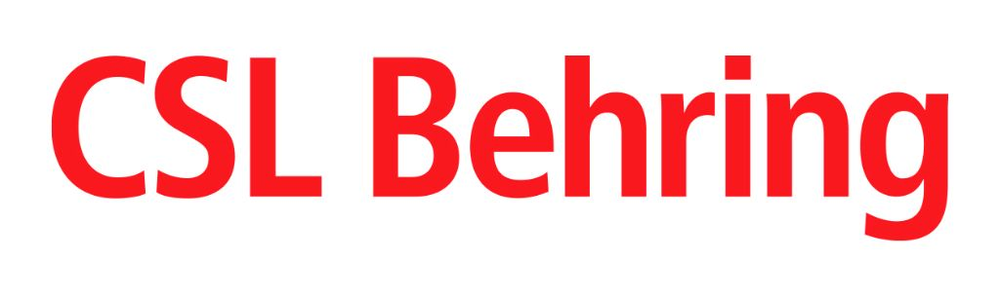
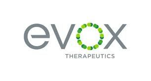

Organizations Our Experts Have Worked For


Field experts make our AI smarter. AI helps our experts deliver faster. We use both to systematically remove "Avoidable Hurdles" so your gene therapy reaches patients sooner.
Browse all our services directly, or select your role and interest for personalized recommendations.
"The deep dive into AAV production systems with Gene Therapy Consultancy gave us crucial clarity on choosing between stable cell lines and transient transfection for our program."
"The rapid technical assessment by GTC on Dual AAV plasmid system provided the clarity we needed to make a confident go/no-go decision, saving us significant time and resources."
"GTC's insights into viral vector QC, especially around qPCR/ddPCR, were incredibly practical and helped refine our testing strategy."
"The focused discussion with GTC on AAV approaches for acute ischemic stroke provided a much-needed expert perspective for our early research."
"GTC's rapid market insights for our new AAV-focused endonuclease product were invaluable for shaping our entry strategy."
"GTC's understanding of AAV chromatography challenges helped us validate the value proposition for our process optimization software."
"A single hour provided a wealth of practical knowledge on AAV manufacturing instrumentation that we immediately put to use."
"Their expert perspective on AAV manufacturing nuances was instrumental in our due diligence process for a potential investment."
"The deep dive into AAV production systems with Gene Therapy Consultancy gave us crucial clarity on choosing between stable cell lines and transient transfection for our program."
"The rapid technical assessment by GTC on Dual AAV plasmid system provided the clarity we needed to make a confident go/no-go decision, saving us significant time and resources."
"GTC's insights into viral vector QC, especially around qPCR/ddPCR, were incredibly practical and helped refine our testing strategy."
"The focused discussion with GTC on AAV approaches for acute ischemic stroke provided a much-needed expert perspective for our early research."
"GTC's rapid market insights for our new AAV-focused endonuclease product were invaluable for shaping our entry strategy."
"GTC's understanding of AAV chromatography challenges helped us validate the value proposition for our process optimization software."
"A single hour provided a wealth of practical knowledge on AAV manufacturing instrumentation that we immediately put to use."
"Their expert perspective on AAV manufacturing nuances was instrumental in our due diligence process for a potential investment."
The gene therapy field is at a critical inflection point. While the science is promising, development is plagued by immense complexity, high costs, and brutal capital efficiency demands.
Too many promising therapies fail not because of bad science, but because of operational inefficiencies that burn precious cash and shorten runway.
Critical go/no-go decisions made without comprehensive intelligence lead to avoidable setbacks and wasted resources.
Fragmented knowledge systems and manual processes create operational drag that slows progress to the clinic.
Many challenges in gene therapy development can be anticipated and avoided with the right expertise and strategic planning. Learn about the major pain points we help you navigate.
Missed public grant opportunities and philanthropic funding leading to capital constraints and delayed AAV program advancement.
Learn MoreSuboptimal vector design choices leading to poor transduction efficiency, immunogenicity, or manufacturing challenges.
Learn MoreManual processes, fragmented data systems, and communication gaps that drain resources—solvable through strategic AI automation and workflow optimization.
Learn MoreDisjointed preclinical programs that fail IND requirements and investor scrutiny, risking costly delays or program failure.
Learn MoreLab-scale production methods incompatible with clinical development, creating costly future roadblocks and forcing late-stage program pivots.
Learn MoreInadequate AAV technical evaluation leading to poor investment decisions, missed opportunities, or portfolio underperformance.
Learn MoreWe are not a traditional consultancy. We are an AI-native intelligence hub that solves core problems with a two-pronged, AI-centric approach.
Our proprietary Intelligent Platforms (VIP, CIP, PIP) are structured knowledge engines that provide hyper-specialized, actionable insights for high-stakes decision-making.
We systematically remove operational "cash leaks" by implementing AI workflow automations, custom agents, and RAG systems to streamline your operations.

We are the AI transformation partner for the gene therapy ecosystem
AI isn't an add-on for us—it's our core operational and delivery model. While competitors sell man-hours, we deliver intelligent solutions.
We leverage deep AAV gene therapy specialized knowledge of field experts to augment AI-generated insights. Our Founder Dr. Rahul Kaushik brings proven expertise at the intersection of AAV gene therapy and applied AI, augmented by specialized AI agents.
Our continuously updated Intelligent Platforms provide a defensible competitive advantage and reliable foundation for AI analysis.
Stop burning cash on avoidable hurdles. Let our AI-native approach accelerate your path to the clinic.